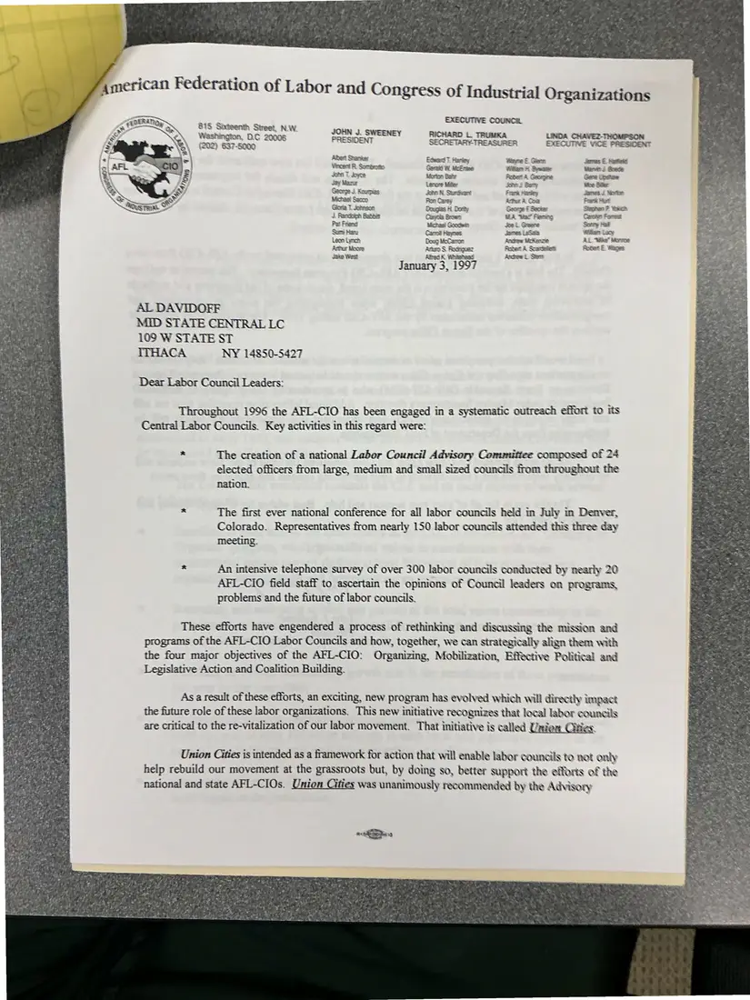
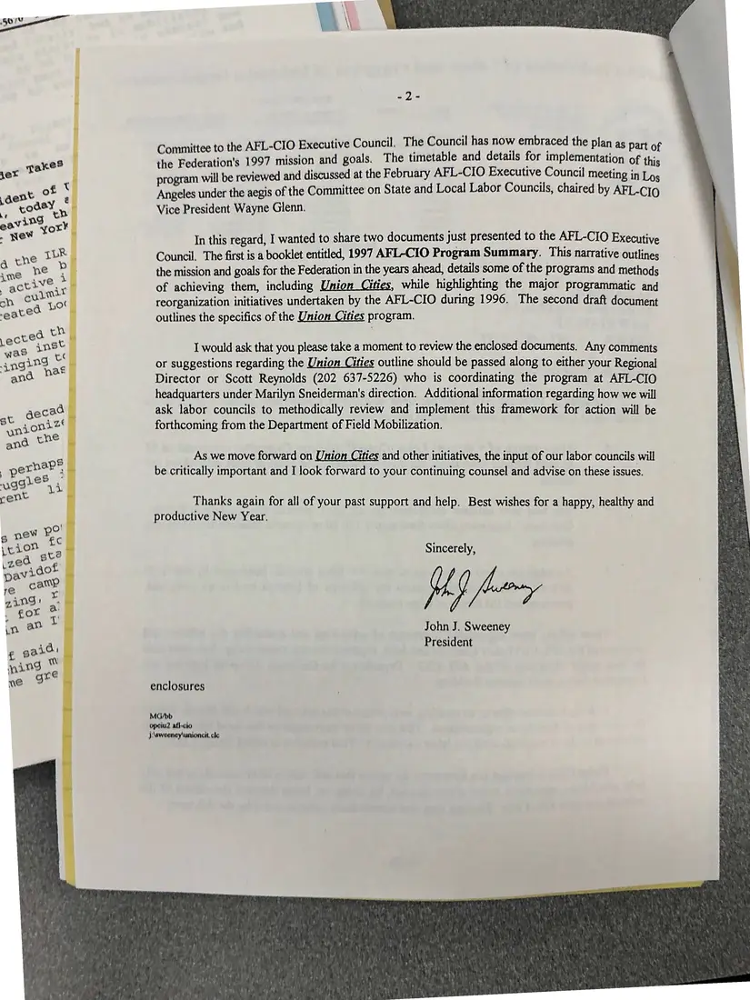
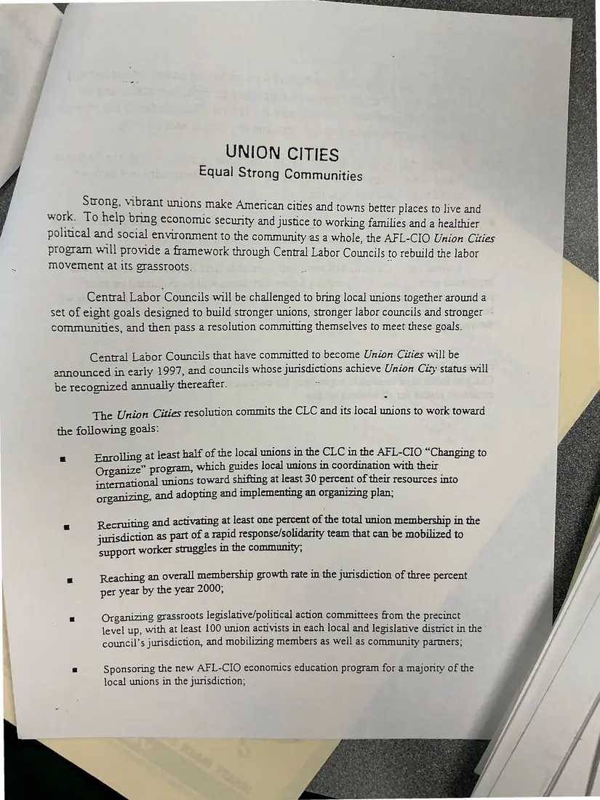
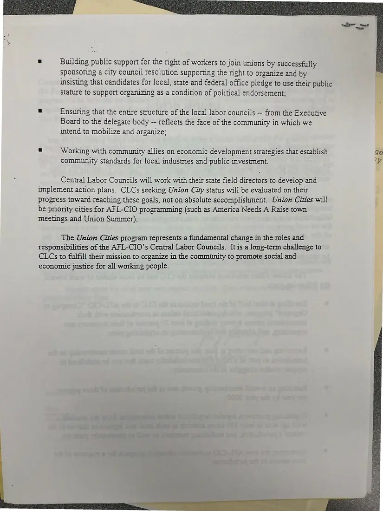

Letter, 4 pages
John J. Sweeney to Al Davidoff on Union Cities, with “Union Cities: Equal Strong Communities”
January 3, 1997
The AFL-CIO president describes the 1996 outreach to central labor councils and introduces the Union Cities program. Enclosed is the program outline with its goals: organizing, rapid response, membership growth, political action, and economic development.
Download or cite this itemPages


(open zoom view)Read the page text (machine-read, contains errors)
This text was generated automatically from the photograph and has not been corrected. The image is the authoritative record.
EXECUTIVE VICE PRESIDENT Wayne £. Gierp Pillar 4 Qumanee Ritter Gaongre ete t Bary Peach Harriiew Retran 8, Co ‘George = Siacker WA. "War Fiening doe. Graare tocrow Mitercie Raider A Srareseilietti Janmes € Matien’ Maree: Goede Gere Upshaw Mice Bitter diarres, 4. Nizrtte Peart Murt Stepher ? Yorict Carcive L omest Sooniny Mail Willary Lacw AL. Miike” Norma Apert £ Wikazes. echo & Stern AL DAVIDOFF MID STATE CENTRAL LC 109 W STATE ST ITHACA NY 14850-5427 Dear Labor Council Leaders: Throughout 1996 the AFL-CIO has been engaged in a systematic outreach effort to its Central Labor Councils. Key activities in this regard were: = The creation of a national Labor Council Advisory Committee composed of 24 elected officers from large, medium and small sized councils from throughout the nation. The first ever national conference for all labor councils held in July in Denver, Colorado. Representatives from nearly 150 labor councils attended this three day meeting. An intensive telephone survey of over 300 labor councils conducted by nearly 20 AFL-CIO field staff to ascertain the opinions of Council leaders on programs, problems and the future of labor councils. These efforts have engendered a process of rethinking and discussing the mission and programs of the AFL-CIO Labor Councils and how, together, we can strategically align them with the four major objectives of the AFL-CIO: Organizing, Mobilization, Effective Political and Legislative Action and Coalition Building. As a result of these efforts, an exciting, new program has evolved which will directly i wnpact the fisture role of these labor organizations. This new initiative recognizes that local labor Soaams are critical to the re-vitalization of our labor movement. That initiative is called Upden Union Cities is intended as a framework for action that will enable labor councils to not only help rebuild our movement at the grassroots but, by doing so, better support the efforts of the national and state AFL-CIOs. Union Cities was unanimously recommended by the Advisory Bhs


(open zoom view)Read the page text (machine-read, mostly readable)
This text was generated automatically from the photograph and has not been corrected. The image is the authoritative record.
SO ae : 4 i il has now embraced the p] mmittee to the AFL-CIO Executive Council. The Counci : plan as part of te Federation's 1997 mission and goals. The timetable and details for implementation of this program will be reviewed and discussed at the February AFL-CIO Executive Council meeting in Los Angeles under the aegis of the Committee on State and Local Labor Councils, chaired by AFL-C] 0 Vice President Wayne Glenn. In this regard, I wanted to share two documents just presented to the AFL-CIO Executive Council. The first is a booklet entitled, 1997 AFL-CIO Program Summary. This narrative outlines the mission and goals for the Federation in the years ahead, details some of the programs and methods of achieving them, including Union Cities, while highlighting the major programmatic and reorganization initiatives undertaken by the AFL-CIO during 1996. The second draft document outlines the specifics of the Union Cities program. I would ask that you please take a moment to review the enclosed documents. Any comments or suggestions regarding the Union Cities outline should be passed along to either your Regional Director or Scott Reynolds (202 637-5226) who is coordinating the program at AFL-CIO headquarters under Marilyn Sneiderman's direction. Additional information regarding how we will ask labor councils to methodically review and implement this framework for action will be forthcoming from the Department of Field Mobilization. As we move forward on Union Cities and other initiatives, the input of our labor councils will be critically important and I look forward to your continuing counsel and advise on these issues. Thanks again for all of your past support and help. Best wishes for a happy, healthy and productive New Year. Sincerely, jf fone John J. Sweeney President enclosures MG/bb opeiu2 all-cio J:\sweency\unioncit. cle


(open zoom view)Read the page text (machine-read, mostly readable)
This text was generated automatically from the photograph and has not been corrected. The image is the authoritative record.
UNION CITIES Equal Strong Communities Strong, vibrant unions make Amencan cities and towns better places to live and work. To help bning €conomuc security and justice to working families and a healthier political and social environment to the community as a whole, the AFL-CIO Union Cities program will provide a framework through Central Labor Councils to rebuild the labor movement at its grassroots. } Central Labor Councils will be challenged to bring local unions together around a set of eight goals designed to build stronger unions, stronger labor councils and stronger - communities, and then pass a resolution committing themselves to meet these goals. Central Labor Councils that have committed to become Union Cities will be announced in early 1997, and councils whose jurisdictions achieve Union City status will be recognized annually thereafter. The Union Cities resolution commits the CLC and its local unions to work toward the following goals: e Enrolling at least half of the local unions in the CLC in the AFL-CIO “Changing to Organize” program, which guides local unions in coordination with their international unions toward shifting at least 30 percent of their resources into organizing, and adopting and implementing an organizing plan; Recruiting and activating at least one percent of the total union membership in the jurisdiction as part of a rapid response/solidarity team that can be mobilized to support worker struggles in the community; Reaching an overall membership growth rate in the jurisdiction of three percent per year by the year 2000; a Organizing grassroots legislatve/political action committees from the precinct level up, with at least 100 union activists in each local and legislative district in the council’s jurisdiction, and mobilizing members as well as community parmers; SI Sponsoring the new AFL-CIO economucs education program for a majority of the local unions in the jurisdiction;


(open zoom view)Read the page text (machine-read, mostly readable)
This text was generated automatically from the photograph and has not been corrected. The image is the authoritative record.
| Building public support for the nght of workers to join unions by successfully sponsoring a city council resolution supporting the right to organize and by insisting that candidates for local, state and federal office pledge to use their public stature to support organizing as a condition of political endorsement; a Ensunng that the entre smmucture of the local labor councils -- from the Executive Board to the delegate body -- reflects the face of the community in which we intend to mobilize and organize; & Working with community allies on economic development strategies that establish community standards for local industnies and public investment. Central Labor Councils will work with their state field directors to develop and implement action plans. CLCs seeking Union City status will be evaluated on their progress toward reaching these goals, not on absolute accomplishment. Union Cities will be prionity cities for AFL-CIO programming (such as America Needs A Raise town meetings and Union Summer). The Union Cities program represents a fundamental change in the roles and Tesponsibilities of the AFL-CIO’s Central Labor Councils. It is a long-term challenge to CLCs to fulfill their mission to organize in the community to promote social and economic justice for all working people. paler
See something wrong, or recognize a person or event? Send a correction. If you hold rights in this item or think it should not be public, write to the same address.